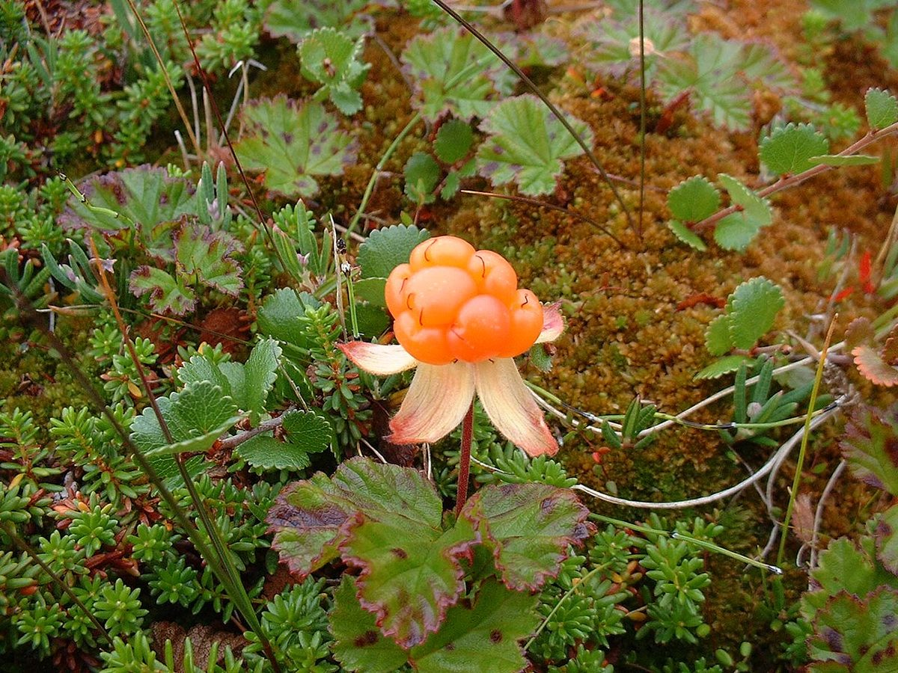
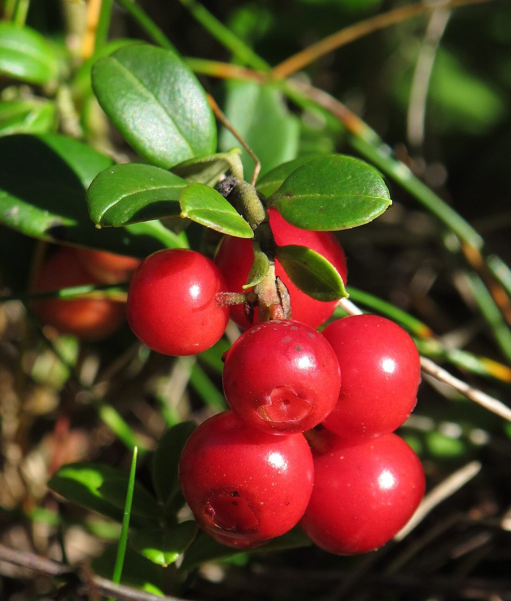

店のこと
店のこと
お店について確認できているのは、所在地・電話番号・Instagramのアカウントです。
確認済み
このページの「想像してみる」部分は、制作側が想像して書いたものです。お店の実際の様子・考え・メニューとは関係がありません。
確認できていること
- 店名は「デリカフェ・キートス」、業種はカフェ
- 所在地は千葉県君津市中島181-4(〒299-1106)
- 電話番号は0439-32-3326
- Instagramのアカウントがある
- 営業時間・定休日・メニュー・価格・ご予約・駐車場は準備中

想像
想像してみる
「キートス」という名前から
由来は分かりません。制作側は、感謝の気持ちをやさしく伝える名前なのかもしれない、と想像しました。「デリ」という言葉からは、惣菜に関わるお店かもしれないとも想像しましたが、実際の内容は確認できていません。想像の話です。

